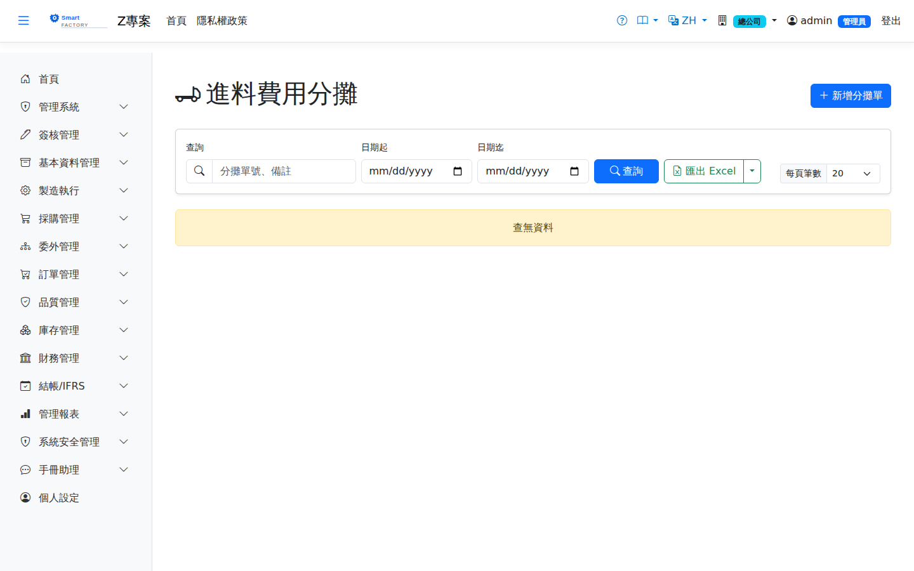

進料費用分攤Landed Cost Allocation
路由：/LandedCostAllocation | 運費/關稅等進口費用分攤入成本Route: /LandedCostAllocation | Allocating freight, duty and other import costs into inventory cost
將運費、關稅、保險等進料附加費用依金額/數量/重量基準分攤至進貨明細，調增存貨單位成本並產生對應分錄。Allocates freight, duty, insurance and other landed costs to receipt lines by amount, quantity or weight, increasing the unit cost of the stock and creating the matching journal entry.

到岸成本分攤畫面截圖（示意，實際欄位/資料依權限與查詢條件而異）Landed cost allocation screenshot (illustrative; actual fields and data vary by permission and query criteria)
查詢Search
1
查詢列輸入條件後點「查詢」；欄位標題可點擊排序，清單下方有分頁導航。Enter your criteria on the query bar and click "Search"; column headers can be clicked to sort, and the paging controls sit below the list.
作業流程Process
分攤Allocation
1
點「新增」選擇要分攤的進貨單（可多張）。Click "Add" and choose the receipts to allocate over (more than one is allowed).
2
輸入費用項目與金額，選擇分攤基準，系統計算各明細分攤額。Enter the cost items and amounts and choose the allocation basis; the system works out how much is allocated to each line.
3
確認過帳：更新存貨成本並產生費用分錄。Confirm and post: the inventory cost is updated and the expense journal entry is created.
只有仍在庫的部分會加進存貨成本：同一張分攤單裡同料號、同儲位的各行，以這些行的進貨量合計對比目前在手量算出在庫比例，比例內資本化、其餘記「進料費用差異」（5151）。費用以外幣輸入時，以單據日的買匯換成本幣後才進存貨與總帳；查無匯率會擋下確認，請先維護匯率。Only the part still in stock is added to inventory cost: for lines of the same item and location in one allocation, the in-stock ratio is the current on-hand quantity over the total receipt quantity of those lines. That share is capitalized and the rest goes to landed cost variance (5151). When the cost is entered in a foreign currency it is converted to local currency at the buying rate on the document date before it reaches inventory and the ledger; confirmation is blocked if no rate exists, so maintain the rate first.
費用發票到了When the cost invoice arrives
1
確認分攤時，費用先貸記「暫估應付運費」（2153）。On confirmation the cost is first credited to accrued freight (2153).
2
運費／關稅發票到了，到應付發票開手動發票，明細科目選「2153 暫估應付運費」，金額填發票未稅額；過帳後借 2153／貸應付帳款，暫估就沖平了。When the freight or duty invoice arrives, create a manual invoice in AP Invoice and choose "2153 accrued freight" as the line account, entering the amount before tax. Posting debits 2153 and credits accounts payable, which clears the accrual.
外幣費用：分攤用單據日匯率估列，發票用發票日匯率入帳，兩者匯率不同時 2153 會留下匯差，請以手動傳票轉入匯兌損益。Foreign-currency costs: the allocation accrues at the document-date rate and the invoice books at the invoice-date rate. If the two rates differ, a small exchange difference is left on 2153; move it to exchange gain or loss with a manual journal entry.
作廢Void
1
點單號開啟已確認的分攤單，按「作廢」並輸入原因。Open the confirmed allocation from its number, click "Void" and enter a reason.
2
系統開立反向傳票（借 2153／貸 存貨、進料費用差異），並把當初加進均價（或成本層）的金額扣回。The system posts a reversing journal entry (debit 2153, credit inventory and landed cost variance) and takes back out of the average cost (or cost layers) what the allocation added.
確認後該料號在該儲位已有出庫（先進先出品則是任何異動），表示分攤進去的成本已有一部分隨出庫轉走，系統會擋下作廢。這時請改開一張負數金額的分攤單或以存貨調整處理。若這筆暫估已經用手動應付發票沖過 2153，作廢後 2153 會留下借方餘額，請一併作廢那張應付發票。作廢日受會計期間鎖管制。If the item has been issued from that location since confirmation (or, for FIFO items, has had any movement), part of the allocated cost has already left with that stock and the void is refused; create a negative allocation or a stock adjustment instead. If the accrual was already cleared by a manual AP invoice on 2153, voiding leaves a debit balance on 2153, so void that AP invoice as well. The void date is subject to the accounting period lock.
列印Printing
清單每列的 按鈕（需有列印權限）在新分頁開啟含 QR Code 的列印單，可直接列印或另存 PDF。列印單含分攤基準、費用類別、到岸成本總額，以及各進貨行的品號、品名、進貨金額、分攤成本與新舊單位成本。The button on each row of the list (print permission required) opens a printout with a QR code in a new tab, ready to print or save as PDF. The printout shows the allocation basis, cost type and total landed cost, and for each receipt line the product code and name, purchase amount, allocated cost and the original and new unit cost.
欄位說明Field reference
查詢條件Query criteria
| 條件Condition | 說明Guide |
|---|---|
| 查詢Search | 分攤單號或來源單號的模糊比對Partial match on the allocation number or the source document number |
| 日期起 / 迄Date from / to | 依單據日期區間篩選Filters by document date range |
清單欄位List columns
| 欄位Field | 說明Guide |
|---|---|
| 分攤單號Allocation No. | 系統採番，不可修改Numbered by the system; not editable |
| 單據日期Doc Date | 費用分攤的認列日期，決定入帳期間Recognition date of the allocation, which decides the accounting period |
| 分攤基準Allocation Basis | 費用攤入各進貨明細的分配依據（依金額、依數量、依重量等）Basis on which the cost is spread over the receipt lines (by amount, by quantity, by weight …) |
| 待分攤費用總額Total Landed Cost | 本次要攤入存貨成本的進貨附加費用合計（運費、關稅、保險等）Total incidental purchase costs to be allocated into inventory cost (freight, duty, insurance …) |
| 幣別Currency | 費用發生的交易幣別；換算本位幣後才攤入成本Transaction currency in which the cost was incurred; it is converted to local currency before being allocated into cost |
| 明細筆數Lines | 本單涵蓋的進貨明細行數Number of receipt lines covered by this document |
| 狀態Status | 分攤單的執行進度；確認後費用併入存貨單位成本，影響後續出庫成本Progress of the allocation document; once confirmed the cost is added to the unit cost of the stock and affects later outbound costs |
| 簽核狀態Approval | 線上簽核的進度Online approval progress |